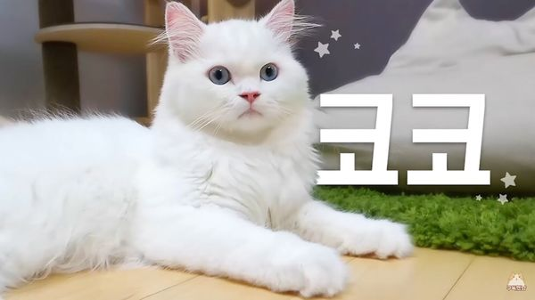

|  | |
| 이름 | 코코 |
|---|---|
| 생일 | 2016년 10월 27일 |
| 품종 | 스코티쉬 스트레이트 믹스 / 화이트 코트 |
| 눈 색 | 밝은 하늘 |
| 성별 | 남아 |
| 몸무게 | 4.26kg (20.08.07) |
| 꼬리 길이 | 28cm |
| 별명 | 코박사, 닥터 코, 냥아치 1호, 기미냥이 등 |
중성화 된 수컷 흰색 스코티시 스트레이트. 장모종이라 하이랜드 스트레이트라고도 부른다.[35] 하지만 날렵한 외모를 지녀 스코티시의 외형적 특성이 두드러지지 않기 때문에 믹스일 확률이 높다.[36] 말풍선색은 진한 하늘색→진한 분홍색.
고양이들이 제각기의 색과 체형을 갖고있는 가운데 유이하게 같은 색깔의 털을 가지고 있는 코코와 라라만 언뜻 보면 구별하기가 힘들다. 바뀌기 전의 고양이 설명란에 '라라 엄마 아님'이라는 문구가 적혀 있었다. 하지만 많이 보다 보면 차이점을 알 수 있는데 코코가 라라보다 더 크고 라라는 먼치킨이지만 코코는 아니기 때문에 코코의 다리가 길다. 그리고 얼굴도 보다보면 알게 되겠지만 상당히 다르게 생겼다.
그런데 17년 하반기에 들어 라라가 많이 커버리는 바람에 코코와 크기가 비슷해졌으며, 털도 많이 자라 더욱 코코와 흡사해져서 구분이 쉽지 않아졌다. 확실하게 구분할 수 있는 방법은 몸 길이에 비례하는 다리길이, 눈매이다. 라라가 눈이 전체적으로 둥근 편에 비해 코코는 날카로운 편이다. 또한 라라가 동그란 얼굴형을 가진 반면 코코는 얼굴형이 옆으로 퍼져서 납작한 느낌이다. 또한 눈 색깔로도 구분할 수 있는데 연한 하늘빛의 눈이 코코, 바다색같이 진한 파란색의 눈이 라라다. 또한 코에 있는 점으로도 구분이 가능하다. 17년에는 8월 1일 기준으로 몸무게 2.96kg이었고, 이후 한참동안 몸무게 공개가 되지 않았는데 17년 겨울 기준으로 모모와 더불어 폭풍성장하고 있어서 티티와 비슷하거나 약간 적은 정도로는 사실 털빨만 보면 디디와 버금갈 정도로 커지지 않았을까 하는 의견이 많은 편이었고, 18년 6월 10일 라이브에서 4.19kg으로 훌쩍 컸다는 것이 알려졌다. 의외로 비슷한 체구인 모모보다 무겁고 티티보다 가볍다. 표정이 매우 다양하고 유독 인면묘 소리를 자주 듣는 고양이이기도 한데, 또렷한 이목구비 덕분에 크림히어로즈 마이너 갤러리나 덕질 트윗 계정 등에서 크히 고양이들 중 유독 잘생겼다는 말이 자주 나온다. 심지어 집사도...
유독 별명이 많은 고양이로, 크림집사에게는 접이식 고양이[37], (초대) 기미냥이, 코딱지 왕자님(또는 고등어 왕자님) 등의 칭호를 얻었다. 하도 말을 안 듣는 모습을 보고 촬영봇이 붙인 별명은 '계식이'. 일단 '간식'계'의 포'식'자'의 준말이라 계식이지만, 빨리 말하면 발음이 엄하다. 편집 고양이가 붙여준 또 다른 엄한 별명으로는 고등신이 있다. '고등어 조림신사'. 똑같은 음식을 먹이고 똑같이 생활하는데도 유독 고등어 조림 냄새가 난다고...
2018년 5월 유튜브 썸네일을 선글라스를 쓴 코코의 그림으로 변경한 적이 있다.
동갑내기인 모모하고는 사이가 굉장히 좋아 이 둘의 콤비는 소위 '모코모코', '냥아치 듀오' 등으로 불리는데, 같이 있으면 자연스럽게 그루밍을 주고받는 사이. 엉덩이 털을 다듬을 때 모모가 그루밍을 해주자 가만히 있었다. 한편 차 안에서 외출할 때 겁이 많은 모모가 참다 못하고 코코의 이동장에 뛰어들어가 낑겨있을 때 불편할 법 한데도 같이 들어가 있기도 했다. 방송 2기 중반까지는 모모와 함께 크림 히어로즈의 사건사고(?)를 대표하는 캣초딩이었다. 후각이 좋은 편이고 식탐도 많으며, 무서운 게 없어서 모모와 함께 간식 시간에 다른 고양이들이 먹을 몫을 탐내서 가로채기도 하고, 집사가 음식을 준비할 때 자주 식탁을 침범하는 탓에 몇 번 구치소(상자)에 갇히기도 했다.
결국 포기한 집사는 코코에게 기미냥이의 역할을 맡겼지만, 음식에 호불호를 안 가리고 그냥 주는대로 잘 받아먹는 아이라 막상 일을 시키는 의미가 없다는 게 문제라면 문제. 그래도 시간이 지나며 점잖아진 모습을 많이 보여준다.
집사 말로는 점점 디디를 닮아가고 있는 것 같다고. 실제로 둘 다 둔둔한 장모종에 얼굴도 둥글납작한 편이라 크림히어로즈 마이너 갤러리에서도 두 고양이가 닮은 것 같다는 이야기가 종종 나온다. 묘하게 얼굴형이나 특유의 표정이나 둘 다 잘생긴게 비슷하게 생겼다. 심지어 코코가 철이 들면서 성격마저도 디디처럼 느긋해져 가고 있다. 덕분에 같이 장난칠 친구를 잃은 모모와 모모의 새 장난감(?)이 된 루루만 안습... 2018년 초에 들어 체구도 커지고 털이 엄청나게 자라면서 디디처럼 삼각김밥 체형이 되고 있고, 털빨을 보면 디디와 비슷하게 커진 것 아니냐는 이야기도 많이 나오는 편. 물론 코코가 쉽게 들어가는 휴지통에 디디는 쉽게 들어가지 못하는 것을 보면 2018년 초에도 여전히 체격차이는 분명히 존재한다. 게다가 9월 30일 라이브에서 밝혀진 바로는 계식이 시절에는 아무거나 잘 먹었지만 어른이 되고 나서 어지간한 사료가 아니면 입도 대지 않고 있다고 한다. 크림집사도 디디와 코코를 두고 털 색깔 빼면 정말 비슷하게 생겼다고 언급할 정도이다. 그래서 둔둔 2세라는 별명과, 디디와 함께 부를 때는 둔둔즈, 둔둔 브라더스라고 불린다.
생각보다 집사에게 케어를 많이 받는 고양이인데, 털 색이 하얀데다가 코도 분홍색이라 코딱지가 끼면 금방 눈에 띄기 때문이다. 집사에 말에 의하면 씻기지 않으면 고등어 조림 냄새가 난다고 한다. 크집사의 고양이들이 목욕을 할 때마다 집사의 등을 등반하는 점이나 어깨로 뛰어오르는 것도 코코가 처음 시작한 모양이라, 고양이들이 타고 올라 옷에 구멍이 날 때마다 "너도 코코한테 배웠냐"며 원망하는 집사의 말을 들을 수 있다. 엉덩이 목욕 중 방귀를 뀌는 바람에 집사와 촬영봇에게 놀림을 받기도 했다. 촬영봇이 코코를 놀리는 집사를 디스하면서도 마지막에 코코가 자기 꼬리를 보고 빙빙 돌 때 방귀 효과음을 넣었다. 6월 18일 생방송에서 다시 목욕을 해야만 했는데, 어김없이 격렬한 반응을 보여줬다. 목욕이 끝나갈 때 쯤엔 야채 씻는 그릇에 사람처럼 팔을 걸쳐 앉은 채 마치 냥생을 포기한 듯한 표정을 지어보이기도 하여 시청자들의 폭소를 유발했다. 그리고 평소의 표정 자체도 무척 다채롭다. 참고
모모와 더불어 유달리 활동적이고 운동 신경이 상당히 좋다. 소위 말해서 '반에서 운동 신경 자랑하는 오빠'. 소파로부터 테이블까지 도움닫기 해서 한번에 뛰어오르는 모습을 몇 번 보여줬고, 카샤카샤로 놀아줄 때도 상당히 높이. 그것도 몇번이든 연달아서 뛴다. 고양이 미로 찾기를 했을 때 다른 고양이들은 한두 번 하는 미로 벽 뛰어넘기를 코코는 세네 번씩 쉬지 않고 할 정도. 이사한 새 집에 있는 집사의 침대 사다리도 거침없이 타고, 2층 침대와 맞닿아있는 책장에서도 바로 뛰어 내려갈 수 있을 정도. 체력과 운동신경이 좋은 건강한 이미지에 비해 의외로 잔병치레가 많은 편이라 7냥이 중에서는 병원에 꽤 자주 가는 편이다.
영상에서 분량이 적다는 의견이 종종 올라온다. 17년 하반기 들어서 말썽을 비교적 덜 부리는데다가 성격도 활달한 편이라 카메라 화면 밖으로 빠져나가는 일이 잦고 털이 많이 빠진다거나 엉덩이를 챱챱챱챱 해줘야 한다거나 하는 손 타는 일까지 적기 때문에 케어를 할 일이 다른 고양이보다는 덜하기 때문이라고. 장모종인데도 불구하고 털엉킴도 없다. 2018년 상반기엔 생겨서 집사가 한탄하고 있다. 게다가 7월 하순에는 곰팡이성 피부병에 걸려 스트레스 받지 말라고 집사가 목욕과 털 손질, 발톱 손질을 모두 면제해줬기 때문에 등장이 더더욱 적었다.
17년 말에는 코박사라고 불리며 드디어 전용 목소리도 생겼다. 콘셉트은 간식을 우주라 칭하며 우주와 생명체, 간식의 관계를 탐구하는 괴짜 과학자. 모모그룹에 속해있다는 설정이다. 냐사(NYASA[38]) 출신이라고 한다. 여담으로 집사가 고양이의 통증 완화 기능이 있는 아시시 루프를 구매했을 때 코박사가 찾아서 구했다는 콘셉트으로 소개를 했는데, 분위기가 무겁지 않으면서도 유전병의 실태를 잘 전달했다는 평가를 받았다. 18년 1월 28일 생방에서는 집사가 컴퓨터를 하거나 공부를 하고 있으면 가장 먼저 관심을 갖고 주변에 앉아있는 경우가 많아서 정말 박사 같다고 이야기하기도 했다.
2017년 어린 시절과 2018년 이후의 성격이 꽤 달라진 고양이이기도 하다. 어릴 때는 먹성이 워낙 좋아서 간식 앞에서 다른 고양이들을 제쳐주고 돌진하거나 파괴 행위를 일삼는 등, 전형적인 냥아치의 모습을 보여주었지만 디디를 닮아간다는 집사의 발언처럼 18년 이후부터는 간식이나 사료 역시 끌리지 않을 때는 단호하게 거절하기도 한다. 그래도 운동신경과 활동성은 여전히 매우 좋다. 또한 NPC처럼 흔들의자나 캣타워에 가만히 앉아서 카메라를 바라보는 빈도가 높아지고 모모와 장난치는 빈도도 좀 줄어들어서 혼자 철든 것 아니냐는 이야기도 있을 정도. 물론 냥아치 본능은 어디 가지 않았는지 장난감 기차 에피소드에서는 코질라 집사가 만들어놓은 레일을 가장 적극적으로(...) 파괴하는 모습을 보여준다. 2018년 1월 들어 식사조절을 하면서 배고파진 덕에 먹성 좋은 냥아치시절로 돌아간건지 집사가 고양이들의 간식을 만들거나 식사를 할때도 꽤 적극적으로 자신을 어필하고 있다.
성묘가 된 이후에는 독립심이 강해져서 자기가 원하지 않을 때는 쓰다듬으면 도망가곤 하고 카메라를 좋아하지 않아서 화면에서 잘 비치지 않는 편이지만, 집사가 공부나 독서, 컴퓨터 작업과 같이 무언가에 열중하고 있을 때면 옆에 와 앉아서 가만히 바라본다고 한다. 호기심도 여전해서 집사가 본인의 고양이의 장난감을 만드는 영상에서는 거의 항상 주변을 서성이고 있고, 새로운 물건들을 언박싱할 때에도 항상 옆에서 구경하는 모습을 보인다. 2020년 들어 집사가 크집사 유튜브 채널에서 게임 방송 스트리밍을 시작한 뒤로 가만히 게임을 구경하는 빈도가 높아져서 고양이 캠에 자주 모습을 비치고 있다.
그리고 거의 울지 않는 굉장히 조용한 고양이이다. 울진 않는데 워낙 성격이 파괴적이라 그렇지. 츄츄급으로 잘 울지 않으며 그래도 밥달라고 삐약삐약우는 츄츄와 달리 식사시간에도 울지 않고 심지어 목욕을 당해도 울지 않는다. 코코가 우는 장면은 유튜브 초창기부터 찾아봐도 정말 손에 꼽는데, 2018년 4월 3일 영상에서 목욕 중에 거의 반항하지 않는 매우 놀라운 모습을 보여주기도 한다. '고양이 행복하면 야옹해' 영상에서 나온 코코의 울음소리는 '야옹' 보다는 '애옹'에 가까워서 상당히 앙증맞은 편. 그리고 집사의 노래에 맞춰 가장 야옹 호응을 잘 해줘서 집사가 좋아죽는 모습이 보인다. 8월 고양이 워터파크를 오픈했어요! 편에서 오랜만에 애옹애옹을 했다. 평소 집사도 울음소리를 듣기 힘든지 몹시 놀라워하는 것이 백미. 19년 2월 20일 영상에서는 엉덩이 찹찹을 당하자 길게 야옹거렸다. 그리고 19년 7월 21일 영상에서 코코가 마지막쯤에 "야옹!" 하면서 울었다. [39]
파괴적인 성격에 비해 마음이 약한 편이라 사냥놀이를 해도 소울메이트인 동갑내기 모모를 제외하면 상대를 제대로 공격하지 않는다. 루루와는 사냥놀이를 곧잘 하지만 집사에 따르면 루루가 진심으로 공격하지만 코코는 루루를 진심으로 공격하지 않고 곧잘 울면서 도망친다고 한다. 그리고 디디와 티티가 코코에게 사냥놀이를 걸면 코코는 일방적으로 도망가버리고 라라와는 사냥놀이 자체를 하지 않는다고 한다. 의외로 성격이 밝아진 뒤의 츄츄와는 잘 놀아주는데(####), 츄츄가 루루 이외에는 사냥놀이를 하지 않았던 것을 생각하면 신기한 경우이다.